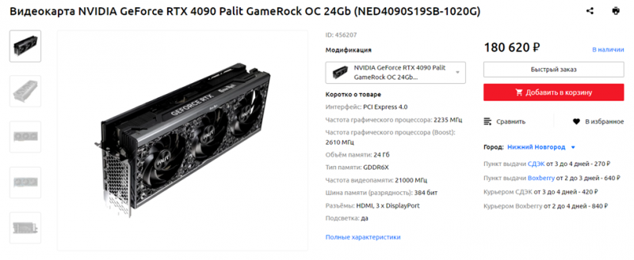

По цене почки
Видеокарта GIGABYTE GeForce RTX 4090 WINDFORCE V2 [GV-N4090WF3V2-24GD] на основе архитектуры NVIDIA Ada Lovelace обеспечивает высокую графическую производительность для работы с программами и запуска игр на ПК. Процессор функционирует с частотой 2230 МГц, которая способна повышаться до значения 2520 МГц в режиме разгона. Видеокарта оснащена 24 ГБ памяти стандарта GDDR6X с пропускной способностью 1008 Гбайт/сек, что обеспечивает быстродействие обработки графических данных.
Система охлаждения WINDFORCE с тремя вентиляторами стабильно отводит тепло от видеокарты в режиме нагрузки. Лопасти с технологией альтернативного вращения формируют интенсивный воздушный поток при низком уровне шума. Задняя сторона усилена металлической пластиной для повышения прочности всей конструкции. Подключение GIGABYTE GeForce RTX 4090 WINDFORCE V2 [GV-N4090WF3V2-24GD] к источникам изображения с разрешением до 8K может осуществляться с помощью 3 разъемов DisplayPort и 1 разъема HDMI.

Если графон-не главное
Видеокарта GIGABYTE GeForce RTX 4060 Ti WINDFORCE OC [GV-N406TWF2OC-8GD] длиной 201 мм обеспечивает повышение вычислительной мощности систем для работы с графикой и запуска игр. Процессор на архитектуре Ada Lovelace функционирует с частотой 2310 МГц, способной увеличиваться до показателя 2550 МГц при разгоне. Технология трассировки лучей улучшает видимость и насыщенность в темных сценах, что повышает реалистичность графики.
Ну это было смело
Видеокарта Palit GeForce RTX 4070 Dual [NED4070019K9-1047D] с архитектурой Ada Lovelace обеспечивает скорость и производительность при обработке графических ресурсов. Она помогает раскрыть вычислительный потенциал системы при запуске игр и профессиональных программ. Платформа NVIDIA Reflex обеспечивает минимальные задержки и отзывчивость управления, что позволяет получить преимущество над соперником. Технология трассировки лучей повышает насыщенность отражений и глубину теней.

Сомнительно, но ОК
Видеокарта Palit GeForce RTX 4070 Ti GamingPro White OC [NED407TV19K9-1043W] обеспечивает высокий уровень производительности и быстродействия в компьютерных играх. Модель оформлена в корпусе белого цвета с полосами на переднем кожухе, в которые интегрированы светодиодные элементы. Подсветка ARGB предоставляет возможность настройки палитры освещения и эффектов с помощью программного обеспечения Palit ThunderMaster.
Мне все равно, я так чувствую
Видеокарта MSI GeForce RTX 4080 VENTUS 3X OC разработана с учетом требований для геймерских систем и профессиональных рабочих станций. Благодаря архитектуре NVIDIA Ada Lovelace она обеспечивает мощный вычислительный потенциал и плавность отображения динамичной графики. Тактовая частота процессора составляет 2210 МГц и способна увеличиваться при разгоне.